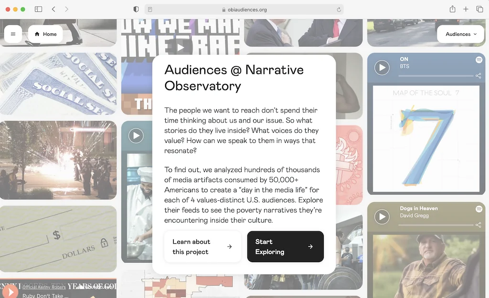

Published: 2021-09-03 | Originally published at AWS Blog
What if media were optimized to benefit people? This thought-provoking question is at the core of Harmony Labs ‘ mission. A nonprofit organization headquartered in New York City, Harmony Labs strives to better understand the impact of media on society, and build communities and tools to reform and transform media systems.
As Brian Wanieswki , Executive Director at Harmony Labs puts it: “The media systems that we have now, for better or worse, have become outrage machines and sorting machines that put people into groups of like minds. The business incentive structures of these systems are such that the more outrage there is, the more profit there is. Political events across the world in recent years have borne out what these media systems produce, and it’s really pretty toxic, and pretty hard to get anything done within. There are all kinds of natural divisions between people, but these media systems tend to reinforce these divisions. So, the first question that we’re asking is, What’s the scope of this problem? And then, What can we do to solve it?”
Harmony Labs use data science and machine learning to answer these questions. Starting from user surveys and media data, they developed advanced natural language processing pipelines that can identify how social issues are represented in media, how they are consumed by different audiences, and what kind of influence that consumption has.
So how do you get that data in first place? Brian says: “All the media data that we need lives inside private companies. We knew that data sharing would be central to our mission, and this is why we’re structured as a nonprofit. We are working in the public’s interest in a non-partisan way. We’ve done big data sharing deals with large companies, as well as startups scraping different corners of the media ecosystem that we’re interested in: internet TV, internet radio, and so on. We have about 10 data partners at the moment, and we’re always looking to expand.”
Thanks to their data partners, Harmony Labs has collected over 50 Terabytes of diverse media: TV, web, mobile, song lyrics, closed captions, social media, and more. This definitely fits the definition of big data (volume, velocity and variety). Working with languages like Golang, Python and R, the Harmony Labs data science and engineering teams rely on AWS services such as Amazon Aurora , Amazon Athena , AWS Glue and Amazon Elastic Kubernetes Service (Amazon EKS) to build their data ingestion and processing workflows.
Once the data is in-house, Harmony Labs make it safe, secure, and accessible to a network of academic researchers who use it to investigate the influence of media systems on politics, society, and culture. Laura Edelson is one of these researchers. A Ph.D. Candidate in Computer Science at NYU’s Tandon School of Engineering, she studies online political communication and develops methods to identify inauthentic content and activity. Harmony Labs supported her on the Ad Observatory project, an exploration of political ads on Facebook.
Harmony Labs also work on their own projects, such as the Narrative Observatory . “A narrative is a story pattern that recurs across different kinds of stories and media. You’ll find them in song lyrics, TV shows, news articles, and more”, says Brian. The Narrative Observatory helps identify narratives on particular topics and track them over long periods of time, and across different media types.
With initial funding from the Bill & Melinda Gates Foundation , Harmony Labs studied narratives linked to the topic of poverty and economic mobility in the United States. Collecting millions of documents (online news, social media, music), they first identified the main narratives present in media. Then, using segmentation techniques, behavioral data on over 50,000 Americans and surveys, Harmony Labs defined four audiences, as well as their dominant narrative, their core values, and their views on specific social issues. Finally, Harmony Labs studied how each audience consumed narratives.
To enable funders, partners, and media companies to gain a deeper understanding of the cultural spaces their audiences occupy, they built a fascinating website, obiaudiences.org , where you can pick an audience and view the associated media feed. In other words, you can literally see the world in someone else’s eyes: what issues they care most about, what media they read most, and so on. This helps to understand the perceptions that different people have on certain issues, and as Brian puts it: “If you’re trying to reach people, it’s important to understand the media world they inhabit, and what can be actually relevant to that world.”

Recently, Harmony Labs led a project funded by the Mozilla Foundation on defining a healthy narrative for artificial intelligence (AI). Studying the TV consumption habits of over 80,000 US adults, and connecting them with closed captioned transcripts and ads, they identified and named the main media narratives on AI. Each narrative includes a definition of AI, the emotion that it creates in people, and whether they think that AI will lead to a happy or an unhappy ending.
Harmony Labs identified four main narratives on AI. Two are extremely negative and fear-inducing. “Tool of Tyranny” says that AI will be used by governments to oppress people. “Robot Overlords” says that we’ll never be able to control AI, and it will end up ruling us. At the other end of the spectrum, the “Wishes Granted” narrative is extremely positive: sure, we don’t understand AI, but it’s a magic wand that will solve all our issues. The last narrative, “Augmented Intelligence”, is more balanced: yes, AI is a great opportunity to improve our daily lives, but it’s also capable of being unfair and even dangerous. We are responsible for designing it, controlling it, and making sure it’s used to help us, not to hurt us.
Harmony Labs found that the “Wishes Granted” narrative was the most prominent (67%). It shines a positive light on AI, but its naive and over-optimistic vision can hide the legitimate questions that AI raises. Still, it’s a good starting point to engage audiences, educate them with the “Augmented Intelligence” narrative, and increase their awareness on both opportunities and challenges.
Closing this post, I’m wondering which AI narrative I’ve actually promoted here, willingly or not! What do you think? One thing is certain: Harmony Labs is using AI to help us understand how media influences us every day, and how we can create a more democratic society. This is important work, and we’re humbled that they picked AWS to help them reach their goals.
For more information on Harmony Labs, please visit harmonylabs.org and harmonylabs.medium.com .
- JulienJulien is the Artificial Intelligence & Machine Learning Evangelist for EMEA . He focuses on helping developers and enterprises bring their ideas to life. In his spare time, he reads the works of JRR Tolkien again and again.